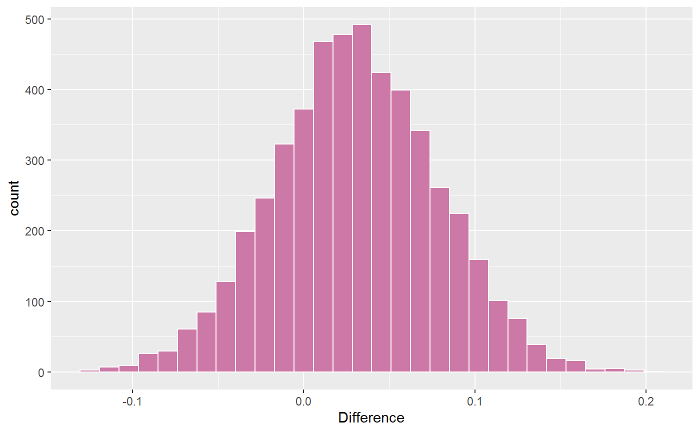

Compute and test partial correlation sums either within or between GGMs (e.g., different groups), resulting in a posterior distribution.
pcor_sum(..., iter = NULL, relations)
| ... | An object of class |
|---|---|
| iter | Number of iterations (posterior samples; defaults to the number in the object). |
| relations | Character string. Which partial correlations should be summed? |
An object of class posterior_sum, including the sum and possibly the difference for
two sums.
Some care must be taken when writing the string for partial_sum. Below are several examples
Just a Sum: Perhaps a sum is of interest, and not necessarily the difference of two sums. This can be written as
partial_sum <- c("A1--A2 + A1--A3 + A1--A4")
which will sum those relations.
Comparing Sums:
When comparing sums, each must be seperated by ";". For example,
partial_sum <- c("A1--A2 + A1--A3; A1--A2 + A1--A4")
which will sum both and compute the difference. Note that there cannot be more than two sums, such
that c("A1--A2 + A1--A3; A1--A2 + A1--A4; A1--A2 + A1--A5") will result in an error.
Comparing Groups:
When more than one fitted object is suppled to object it is assumed that the groups
should be compared for the same sum. Hence, in this case, only the sum needs to be written.
partial_sum <- c("A1--A2 + A1--A3 + A1--A4")
The above results in that sum being computed for each group and then compared.
# \donttest{ # data Y <- bfi # males Y_males <- subset(Y, gender == 1, select = -c(education, gender))[,1:5] # females Y_females <- subset(Y, gender == 2, select = -c(education, gender))[,1:5] # males fit_males <- estimate(Y_males, seed = 1)#>#>#>#>sums <- pcor_sum(fit_males, fit_females, relations = "A1--A2 + A1--A3") # print sums#> BGGM: Bayesian Gaussian Graphical Models #> --- #> Network Stats: Posterior Sum #> Posterior Samples: 5000 #> --- #> Estimates #> #> Sum: #> Post.mean Post.sd Cred.lb Cred.ub #> g1: A1--A2+A1--A3 -0.314 0.039 -0.390 -0.238 #> g2: A1--A2+A1--A3 -0.344 0.026 -0.394 -0.293 #> --- #> #> Difference: #> g1: A1--A2+A1--A3 - g2: A1--A2+A1--A3 #> #> Post.mean Post.sd Cred.lb Cred.ub Prob.greater Prob.less #> 0.03 0.048 -0.065 0.125 0.737 0.263 #> ---#># }